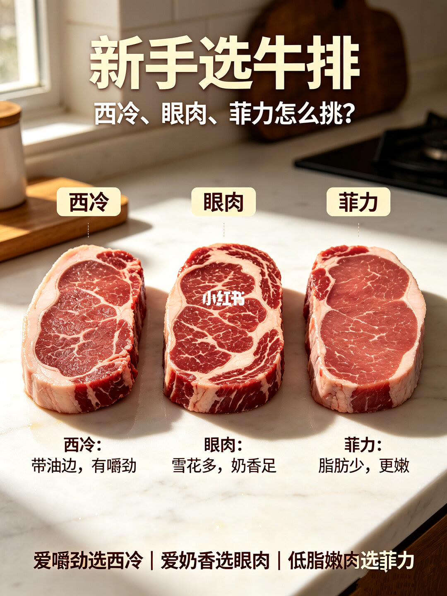
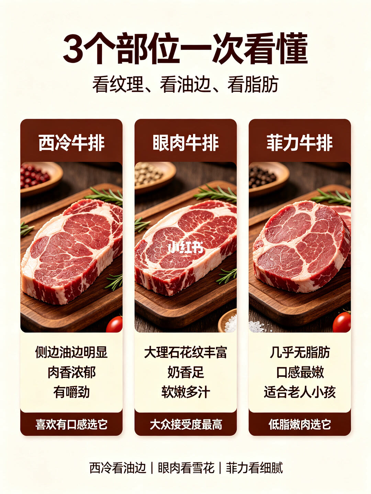
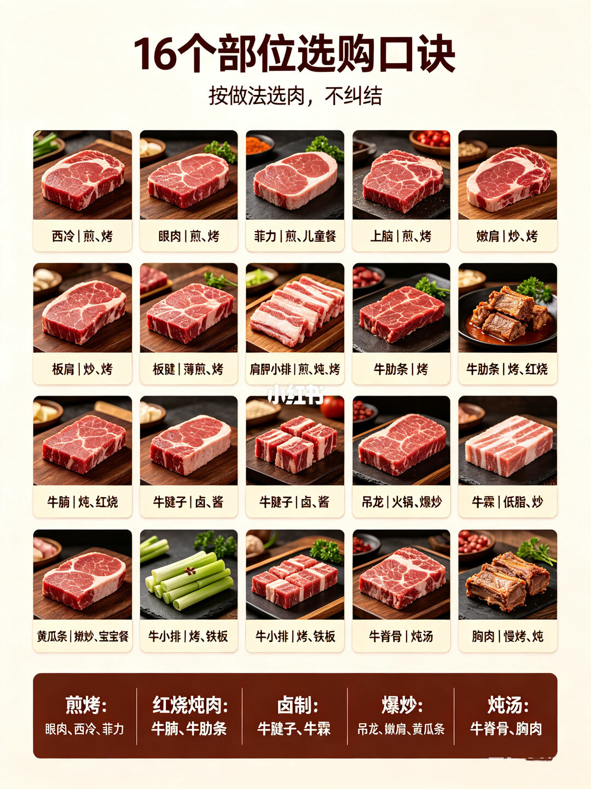

1/3
三块生排，各一句

左是西冷：带油边，有嚼劲。中是眼肉：雪花多，奶香足。右是菲力：脂肪少，更嫩。页底一句：爱嚼劲选西冷，爱奶香选眼肉，低脂嫩肉选菲力。眼肉画面上有平台水印。这页没有价格、厚度和熟度。
2/3
看纹理、看油边、看脂肪

西冷牛排：侧边油边明显，肉香浓郁，有嚼劲，栏底写「喜欢有口感选它」。眼肉牛排：大理石花纹丰富，奶香足，软嫩多汁，栏底写「大众接受度最高」。菲力牛排：几乎无脂肪，口感最嫩，适合老人小孩，栏底写「低脂嫩肉选它」。页底口诀：西冷看油边，眼肉看雪花，菲力看细腻。和第 1 页比，这页多了「肉香浓郁 / 软嫩多汁 / 适合老人小孩 / 大众接受度最高」，辨认方法仍是油边、雪花、脂肪多少。
3/3
按做法选，格子比页脚长

格子从左到右、从上到下：西冷，煎、烤。眼肉，煎、烤。菲力，煎、儿童餐。上脑，煎、烤。嫩肩，炒、烤。板肩，炒、烤。下一格字接近「板腱」，薄煎、烤。肩胛小排，煎、炖、烤。牛肋条出现两次，一次只写烤，一次写烤、红烧。牛腩，炖、红烧。牛腱子出现两次，都是卤、酱。吊龙，火锅、爆炒。牛霖，低脂、炒。黄瓜条，嫩炒、宝宝餐，「嫩」字略糊。牛小排出现两次，都是烤、铁板。牛脊骨，炖汤。胸肉，慢烤、炖。
页脚五类比格子短：煎烤是眼肉、西冷、菲力；红烧炖肉是牛腩、牛肋条；卤制是牛腱子、牛霖；爆炒是吊龙、嫩肩、黄瓜条；炖汤是牛脊骨、胸肉。上脑、板肩、肩胛小排、牛小排、胸肉的慢烤，都没有进这五行。
汇总
三种排看第 1–2 页，其余部位以格子为准
结论：只选西冷、眼肉、菲力时，依据是第 1 页和第 2 页——嚼劲和油边对西冷，奶香和雪花对眼肉，低脂和细嫩对菲力。要按红烧、卤、爆炒、炖汤买别的部位，依据是第 3 页的格子，不是页脚那五行。
边界：第 3 页标题写 16 个部位，格子是 20 格；牛肋条、牛腱子、牛小排各出现两次，去掉重复后仍是 17 个名字。页脚把牛霖放进卤制，格子写的是低脂、炒。菲力在第 2 页写成适合老人小孩，在第 3 页写成煎和儿童餐，没有给出年龄或份量。全篇没有价格和产地。